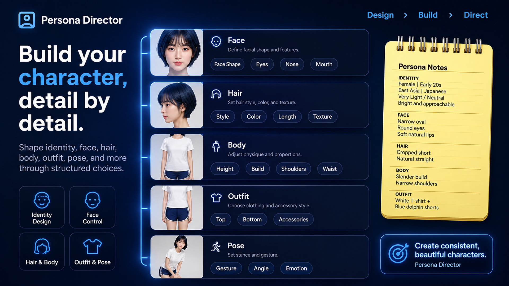
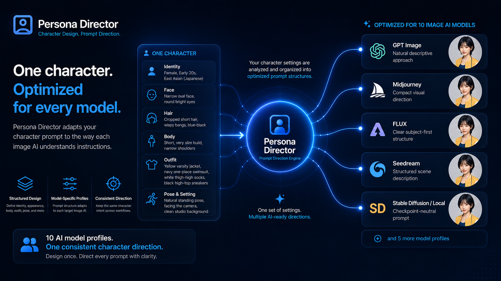

Diseña el personaje
Crea un único personaje mediante controles estructurados de identidad, rostro, cabello, cuerpo, vestuario y fondo.
Producto de URSUS Loft
Diseño estructurado de personajes para generación de imágenes.
Una herramienta local de diseño de personajes y creación de prompts para mantener personajes ficticios consistentes entre distintos flujos de generación de imágenes.
Desarrollado y publicado por URSUS LoftCrédito de creación: BEAR Works
Dentro de la aplicación
Da forma a un personaje ficticio con controles de diseño claros e independientes y revisa el prompt generado dentro de un único flujo de trabajo local.



Descripción general
Persona Director es una aplicación para Windows diseñada para crear un único personaje ficticio y elaborar un prompt estructurado a partir de ese diseño. No es un generador de imágenes ni ejecuta un modelo de generación de imágenes.
Sus controles de personaje abarcan identidad, rostro, ojos, cejas, nariz, boca, cabello, cuerpo, vestuario, fondo y salida. El prompt se basa en la configuración seleccionada del personaje, no en un flujo de escenas o bloqueo de cámara.
Flujo de trabajo principal
Crea un único personaje mediante controles estructurados de identidad, rostro, cabello, cuerpo, vestuario y fondo.
Selecciona un tipo de imagen de personaje y un estilo de captura como Mirrorless Digital Camera, 35mm Film Camera o iPhone Camera.
Elige una IA de imagen objetivo y copia el prompt estructurado creado a partir de la configuración actual del personaje.
Controles actuales
Define la identidad, la forma del rostro, los ojos, las cejas, la nariz, la boca, la impresión facial y otros detalles visibles relacionados.
Organiza por separado el peinado, la complexión, la ropa y las decisiones de estilo para que sean fáciles de revisar.
Crea indicaciones de prompt para Single Portrait, Full Body o Character Sheet a partir del personaje seleccionado.
Adapta el mismo personaje para GPT Image, Nano Banana, Midjourney, Grok, FLUX, Qwen Image, Z-Image, Seedream, Krea 2, o Stable Diffusion y modelos locales.
Información del producto
Qué es Persona Director
Persona Director sirve para crear un personaje ficticio mediante un conjunto estructurado de decisiones visuales. Divide el personaje en controles fáciles de entender y convierte la configuración activa en un prompt para la IA de imagen objetivo seleccionada.
Las decisiones sobre rostro, cabello, cuerpo, vestuario, fondo y salida pueden desviarse cuando se escriben como una lista sin estructura. Mantenerlas separadas facilita revisar, comparar y trasladar el personaje entre distintos flujos de generación de imágenes.
Es útil para artistas de personajes, diseñadores conceptuales, escritores, creadores de juegos y animación, y usuarios de generación de imágenes que quieran una forma repetible de definir un único personaje ficticio.
No. Crea y estructura prompts a partir de la configuración del personaje para usarlos con un servicio externo de generación de imágenes o un flujo de modelos locales.
Los perfiles objetivo actuales incluyen GPT Image, Nano Banana, Midjourney, Grok, FLUX, Qwen Image, Z-Image, Seedream, Krea 2 y Stable Diffusion o modelos locales. Los nombres de los modelos indican objetivos de optimización de prompts y no implican afiliación con sus proveedores.
Sí. Character Sheet es uno de los tipos de salida disponibles, junto con Single Portrait y Full Body.
Persona Director es una aplicación local para Windows. Prepara prompts a partir de la configuración que elijas; la generación de imágenes se realiza en el servicio externo o flujo de modelo que selecciones.